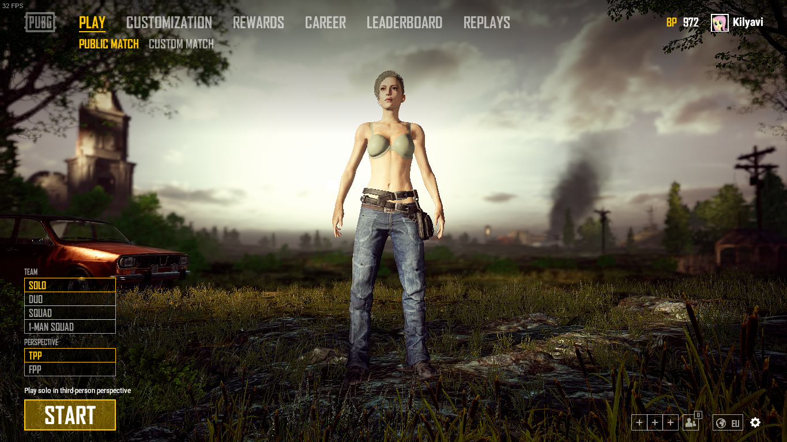

Обновление PUBG 1.0 от 21.12.2017 на русском
* Пожалуйста, обратите внимание, когда активна функция посмертной записи и повтора, производительность некоторых PC может быть снижена.
Оптимизация клиента
- Оптимизированы данные о местности для меньшего использования памяти
- Оптимизированы текстуры для меньшего использования памяти
- Оптимизировано море за счет уменьшения волновых эффектов
- Снижены лаги при наличии многих игроков в поле зрения
- Оптимизирована анимация персонажей
- Уменьшено использование памяти персонажами
- Добавлены уровни детализации для дальнейшей оптимизации рендеринга оружия на больших расстояниях
- Оптимизированы различные мировые эффекты
- Оптимизированы различные элементы пользовательского интерфейса
- Уменьшены проблемы с задержкой при загрузке местности
- Уменьшено времея загрузки местности
[Тактика] + [Убийство] Разрушитель миров Кин'Гарота. Анторус.
Смонтировал первые ролики с субботы. На первом рассказывается и показывается тактика и механика босса. На втором видео просто килл такой, каким он был. Приятного просмотра.
Новый видосик
Делать было нечего, мы бегали на аренку. Было весело. Отснято 4 с половиной часа. Тут смонтированно только первые 30 минут. Приятного просмотра.
Конец эпохи застоя.
К ознакомлению:
Мы вновь вернулись в WoW, и сновым запалом набираем людей для покорения последнего рейда в Legion'e и для того, чтобы вступить в Battle for Azeroth состоявшимся коллективом. Для всех новоприбывших, было бы полезно ознакомиться с нами на странице О Проекте, так как мы сильно отличаемся от среднестатистических гильдий.
Коротко о ближайших планах:
Надо для начала познакомиться и посмотреть, кто у нас есть, и что мы с этим можем сделать. Начинать будем, грубо говоря, с нуля. В зависимости от народа, либо будем фармить данжи (Э), либо собирать рейды (пока нормалы) и добирать пугов. Выбраны будут 2 дня в неделю рейдовых, остальные - по желанию и возможностям. Возможно, я буду собирать РБГ в эти дни.
Состав:

Мы (точное количество "Мы" пока назвать сложно) довольно таки способные. Рейд поводить можем. Сайт захучить, песню или книгу написать, меч выковать, на гитаре сыграть. Но! Тем не менее нам всегда нужны деятельные люди не только для пыщ пыщ ололо в рейдах. Если Вы заинтересованы в развитии проекта, и обладаете безграничным энтузиазмом и/или полезными навыками то милости просим.
Буенос Ночес, Дамы и Дамы с пиписьками! С Вами BC News.
Жы Есть!
Главным образом о себе, любимом. Что бы я не делал, чем бы не занимался, а в игры всё тянет и тяяянет. Вот, нелёгкая затащила снова в WoW. Что делать, пока не вкурил, но очень воодушевился будущим аддоном, поэтому надо осваиваться и привыкать к кнопкам. Решил снова собрать наше Сообщество. Времени сейчас крайне мало, но к НГ думаю разъебаться с делами и иметь больше свободного времени. И собственно к чему пишу. Собраться я решил более организованно и конструктивно, поэтому, уважаемые (нет) задроты, стримеры, кодеры, писатели, художники и прочие безработные тунеядцы - готовьте конструктивные предложения и разрабатывайте идеи. Свои концептики есть, но времени, как уже писал, нет.
Связь.
Я таки решил перейти в Twich (Curse), как и предлагал давно. TS будет также висеть, как резерв, но собираться будем в твиче. Качество хорошее, удобный чатик, картинки, обмен файлов и многое другое. Сервер наш BarCraft. Там обитаю почти каждый день с 21 до 02 ориентировочно.
Pool. Game Pool.
Как и писал ранее, я вернулся в WoW, и мы с Илей, Костей и Дарком уже пытаемся куда-то там походить. Также активно ебашим сковородками в PUBG (чего и другим советуем). Иногда LoL прочая шалупонь по вкусу. Также выслушаем Ваши предложения.
/dev
В принципе, сайт я и сейчас могу сделать простенький, но для дальнейшей работы мне нужны толковые ребята, которые шарят в php, yii2, git, linux. Хотя бы для дельного совета. Я слышал у нас водятся такие.